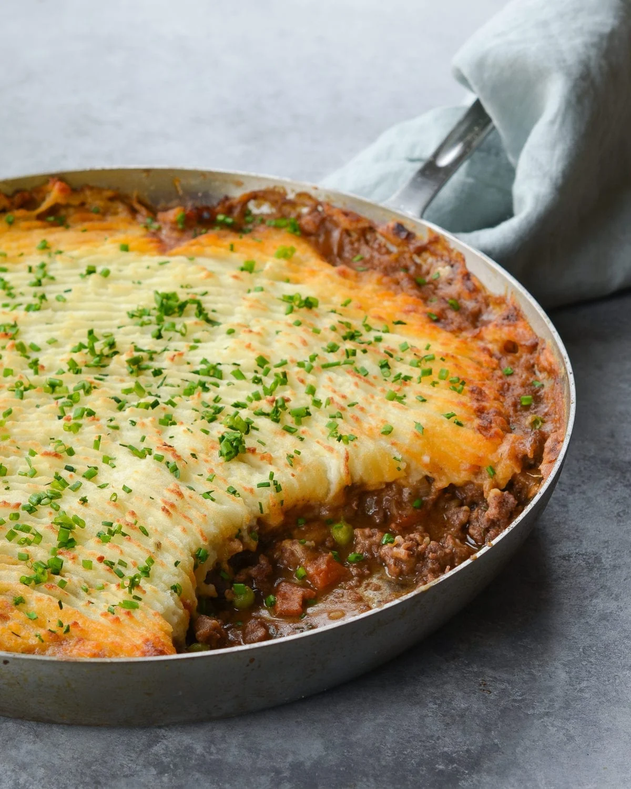

Home
Shepherd's Pie Recipe

Description
Shepherd's pie, cottage pie, or in French cuisine Hachis Paramentier, is a savoury dish of cooked minced meat topped with mashed potato and baked formerly also called Sanders or Saunders.
The meat used may be either previously cooked or freshly minced and the usual meats are beef or lamb.
Ingredients
- Ground Beef or Ground Lamb
- Carrots
- Corn
- Onion
- Cheddar Cheese
- Tomato paste
- Potatoes
- Flour
- Garlic
- Olive oil
- Parsley
- Dried Thyme
- Dried Rosemary
- Salt and pepper
- Worcestershire sauce
Steps
- Suate some chopped onions in olive oil
- Add ground beef or ground lamb
- Add dried parsley, dried thyme, dried rosemary, salt, and pepper
- Stir and cook the meat mixture until the meat is browned
- Add minced garlic and Worcestershire sauce
- Cook the garlic for a minute
- Add flour and tomato paste
- Add vegetables (corn, carrots, etc.)
- Simmer meat until thick and boil some peeled and chopped potatoes until soft
- Drain potatoes
- Add butter, half & half, parmesan cheese, garlic powder, salt, and pepper.
- Masth the potatoes until smooth.
- Pour the meat mixture into a casserole dish.
- Top it with the cheesy mashed potatoes.
- Bake until the meat is bubbling and the potatoes are golden.
- Enjoy!